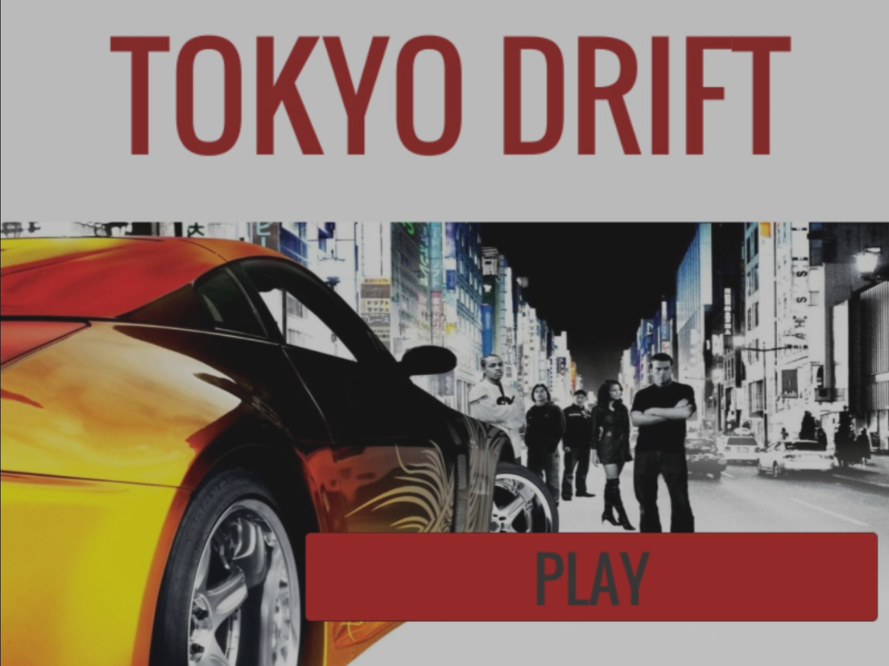

Welkom.

Jildert Venema
Eerste jaars student Informatica op NHL te Leeuwarden.


Jildert Venema
Eerste jaars student Informatica op NHL te Leeuwarden.
Ik ben Jildert Venema, een 18 jaar oude HBO student. Ik ben rustig en ik heb veel geduld. Omdat ik leergierig en vasthoudend ben, omschrijf ik mezelf als een harde werker. Ik hou van muziek, gamen en natuurlijk programmeren. Iets zelf maken of wat nog niet bestaat vind ik het leukste wat er is, creatief zijn. Ik vind het leuk om moeilijke problemen op te lossen, zelfstandig of samen in een team.
Ik ben op de middelbare school begonnen op havo niveau. Dit vond ik erg lastig, omdat ik nog niet met die zelfstandigheid om kon gaan. Hierdoor ben ik een niveau gedaald. Dit niveau verliep mij te gemakkelijk, dus ben ik keihard mijn best gaan doen om er voor te zorgen dat ik terug naar havo kon gaan. Dit is gelukt en mijn havo diploma is binnen. Nu zit ik eindelijk op het hbo en studeer ik een (tot nu toe) super leuke opleiding en past het zeker bij mij.
Ik zit momenteel in het 1e jaar van de HBO opleiding B-Informatica. We zijn net begonnen, maar de basis van de volgende talen ligt er al. Namelijk de talen:
Ongeveer 3 jaar geleden liet een vriend van mij een programma zien waarin je muziek kon maken: "FL studio". We gingen samen op een keyboard noten spelen en in het programma importeren. Een simpele beat eronder en ons eerste liedje was geboren. Na die dag heb ik heel veel YouTube tutorials gekeken en veel geoefend (klik op het wolkje hieronder voor mijn tracks op SoundCloud). Op een gegeven moment had ik een track gemaakt en had ik gitaar akkoorden er bij geplakt. Het klonk niet helemaal zoals ik het in mijn hoofd had, dus ik dacht: Waarom leer ik niet gitaar spelen en speel ik het zelf in? Dit heb ik gedaan, weer heel veel YouTube tutorials gekeken. Ik kwam erachter dat ik gitaar spelen ook super leuk vind. Een hele nieuwe creatieve wereld ging voor me open. Je kan zelf spelen wat je wilt, je kan je eigen draai aan bestaande liedjes geven of gewoon zelf iets verzinnen.

Ik wil graag een goed betaalde baan en nog belangrijker, iets wat ik echt leuk vind om te doen. Bedrijfskunde vind ik heel interessant. Ik zie mezelf daarom later in een groot bedrijf werken met een uitdagende baan en leuke collega's. Het opzoeken van fouten en problemen om het vervolgens te gaan oplossen in een team zie ik wel zitten.
2DRaceGame
Dit is een simpele 2D Race game. Het is het eerste groepsproject van mijn opleiding. Het spel is gemaakt in de engine "Unity". Het spel is gecodeerd in de programmeertaal "C#". Eisen van het spel zijn bijvoorbeeld: De auto's moeten kunnen botsen met elkaar en muren, de auto's moeten vertragen als ze het gras in rijden, het spel moet voorzien zijn van checkpoints en er moet een pitstop zijn waar je moet tanken na enige tijd.
Domotica Project
Voor het Domotica Project heb ik samen met een projectgroep een app en Arduino server gemaakt. Via de app is het mogelijk om KlikAanKlikUit schakelaars aan of uit te zetten. Ook is het mogelijk om de schakelaars om een bepaalde tijd aan te zetten en na een bepaalde tijd weer uit. Dit is via de app instelbaar. De Arduino communiceerd met de schakelaars via een RF-verzender.


E-mail: jildert.venema@hotmail.com
Klas: I1D (Informatica)
Mentor: David Schweizer
PPO docente: Nynke van der Wijk